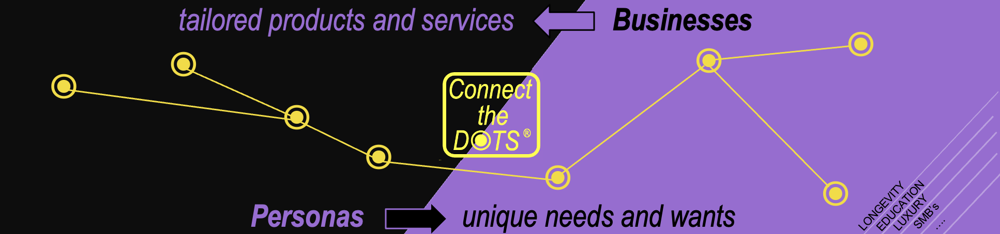

⚡ Deterministic On-Device Knowledge Architecture • Patent Registered
Where Individual Needs Connect with Business Precision.
100% Offline. Zero Data Footprint. Pure Determinism.
Connect the DOTS (CtD) bridges business capabilities with exact persona requirements through a proprietary mathematical graph of 931 nodes, operating entirely on your desktop without external cloud dependencies.
